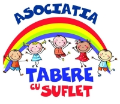

sociatia Tabere cu Suflet are doi Membri Fondatori, un Membru de Onoare si un numar nelimitat de Membri Asociati si Sustinatori. La acestia se adauga copiii din Tabere cu Suflet (cu statut de Membru Simpatizant) si voluntarii TeamXpert Sports Events (cu statut de Membru Voluntar).
Parinti, precum si alte persoane care adera la scopul Asociatiei si care sprijina moral si material Asociatia in realizarea obiectivelor acesteia.
Membrii care au fondat Asociatia si care contribuie prin efort propriu la constituirea patrimoniului si la realizarea obiectivelor Asociatiei.
- Personalitati marcante ale vietii sportive sau culturale, care s-au remarcat, cu deosebire, in domeniile de interes ale Asociatiei;
- Persoane care, prin activitatea lor, inspira si sprijina Asociatia in realizarea obiectivelor acesteia.
Persoanele care, prin contributiile morale si materiale, au un impact major in realizarea obiectivelor Asociatiei, instructorii si educatorii din Echipa Tabere cu Suflet, alte persoane care ne inspira in mod direct in organizarea programelor Asociatiei.
Copiii si participantii la activitatile Asociatiei, indiferent de varsta.
Voluntarii de la programele Tabere cu Suflet, precum si cei din echipa TeamXpert Sports Events, fara de care niciun concurs nu ar putea exista!
Iata lista Membrilor Asociatiei
